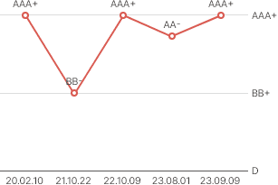
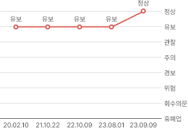

05. 신용정보 기업평가등급, WATCH등급, 현금흐름등급
나이스평가정보(주)
116-81-15020
기업평가등급 이력
※ [첨부1] 등급 정의를 참고하시기 바랍니다.
| 등급 | 평가 일자 | 재무 기준 일자 | 등급구분 |
|---|---|---|---|
| AAA+ | 2024.04.29 | 2023.12.31 | 평가등급 |
| BB- | 2024.04.21 | 2022.12.31 | 평가등급 |
| AAA+ | 2023.04.21 | 2021.12.31 | 평가등급 |
| AA- | 2022.04.20 | 2021.12.31 | 모형등급 |
| AAA+ | 2022.04.20 | 2021.12.31 | 모형등급 |
※ 최대 5건까지 표시됩니다.
WATCH등급 이력
※ [첨부1] 등급 정의를 참고하시기 바랍니다.
| 기준일자 | WATCH등급 | WATCH사유 |
|---|---|---|
| 2023.02.10 | 정상 | - |
| 2021.10.22 | 유보 | 최근 3년 연속 당기순이익 적자, 수익성, 재무 안정성, 부채상환능력, 기업 검색 건수 |
| 2021.10.09 | 관찰 | 최근 3년 연속 당기순이익 적자, 재무 안정성, 재무 활동성, 부채상환능력, 기업 검색 건수 |
| 2021.08.01 | 유보 | 재무 안정성, 재무 활동성, 부채상환능력, 거래처 안정성 변동, 기업 검색 건수 |
| 2020.07.09 | 경보 | 완전 자본잠식, 최근 3년 연속 당기순이익 적자, 최근 3년 연속 영업활동현금흐름이 ‘부’ |
※ 최대 5건까지 표시됩니다.
현금흐름등급 이력
※ [첨부1] 등급 정의를 참고하시기 바랍니다.
| 현금흐름 분석 요약 | 2019.12.31 | 2020.12.31 | 2021.12.31 | 2022.12.31 | 2023.12.31 |
|---|---|---|---|---|---|
| Ⅰ. 영업활동 후 현금흐름 | 상 | 하 | 중 | 상 | 중 |
| Ⅱ. 이자 및 유동성부채 상환 후 현금흐름 | 상 | 상 | 하 | 상 | 상 |
| Ⅲ. 경상 및 CAPEX 투자활동 후 현금흐름 | 하 | 중 | 상 | 상 | 중 |
| Ⅳ. 이자발생부채 대비 자금조달 전 현금흐름 | 상 | 상 | 하 | 상 | 중 |
| Ⅴ. 기업규모 대비 영업현금흐름 | 중 | 상 | 상 | 상 | 상 |
| Ⅵ. 현금성자산 보유 규모 우수 여부 | 상 | 상 | 상 | 상 | 상 |
※ 신용도판단정보에는 일반적으로 금융기관에 대한 채무를 3개월 이상 연체했을 떄 기록되는
연체정보, 기업의 채무를 보험사 등 보증인이 대신 지급했을 때 기록되는
대위변제·대지급정보, 부도정보 등이 포함됩니다. 최대 5건까지 표시됩니다.
대위변제·대지급정보, 부도정보 등이 포함됩니다. 최대 5건까지 표시됩니다.
기업평가등급 이력

WATCH등급 이력

기업 분석 보고서(상세보고서)
13